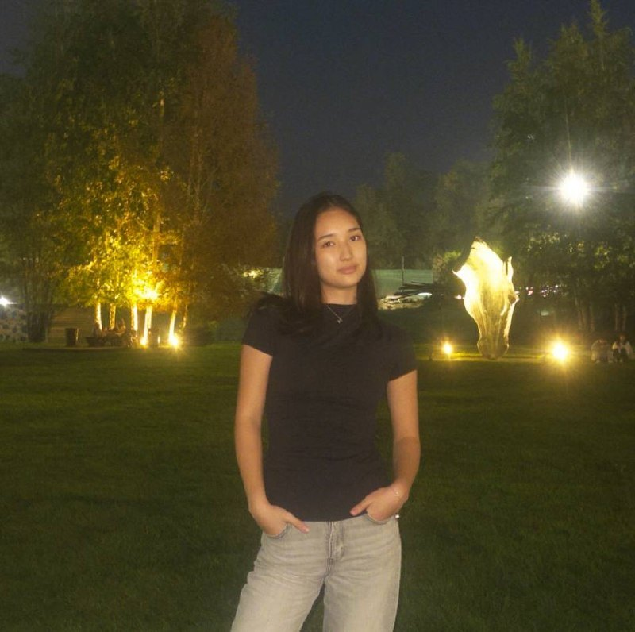
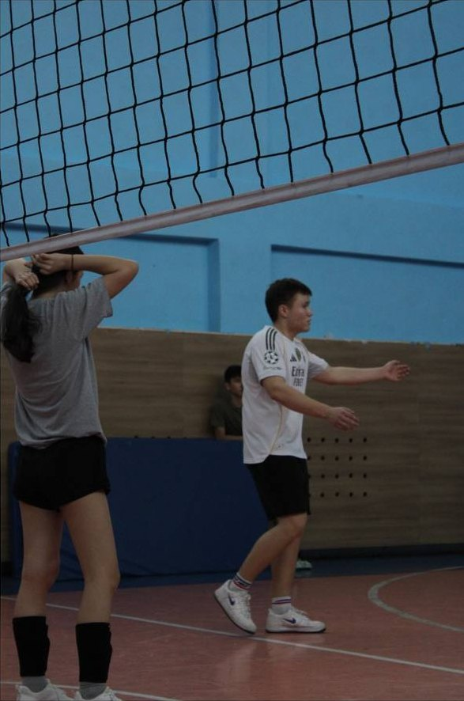
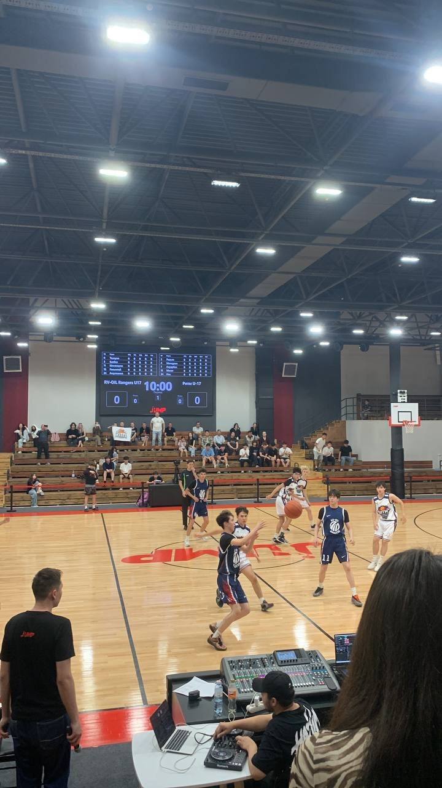
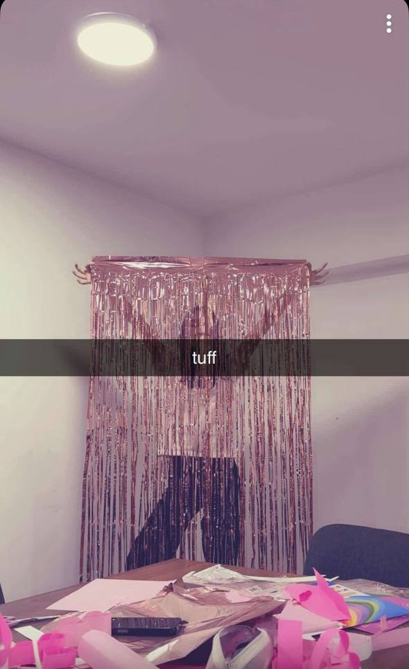
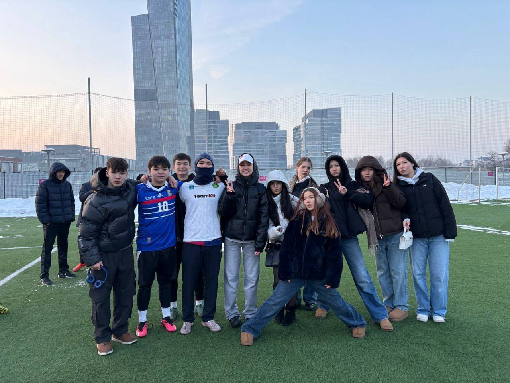
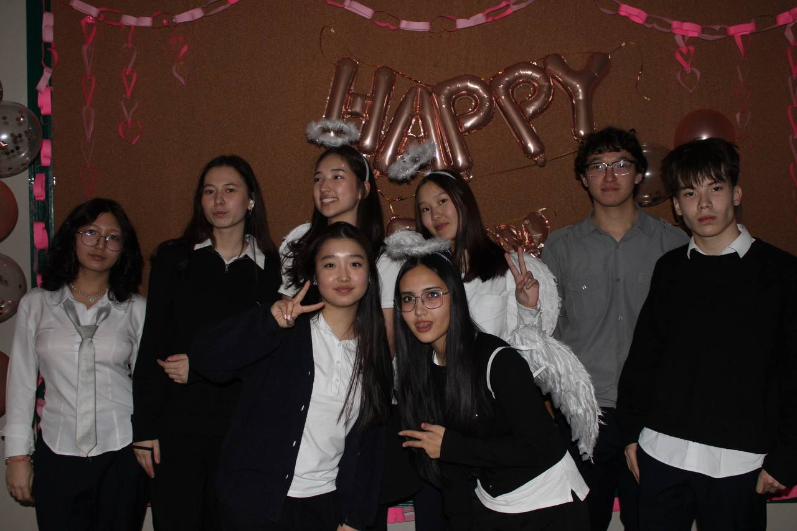
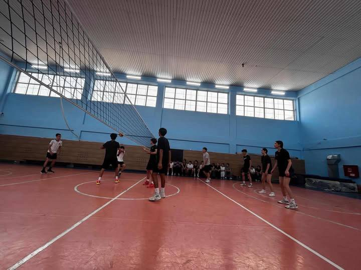
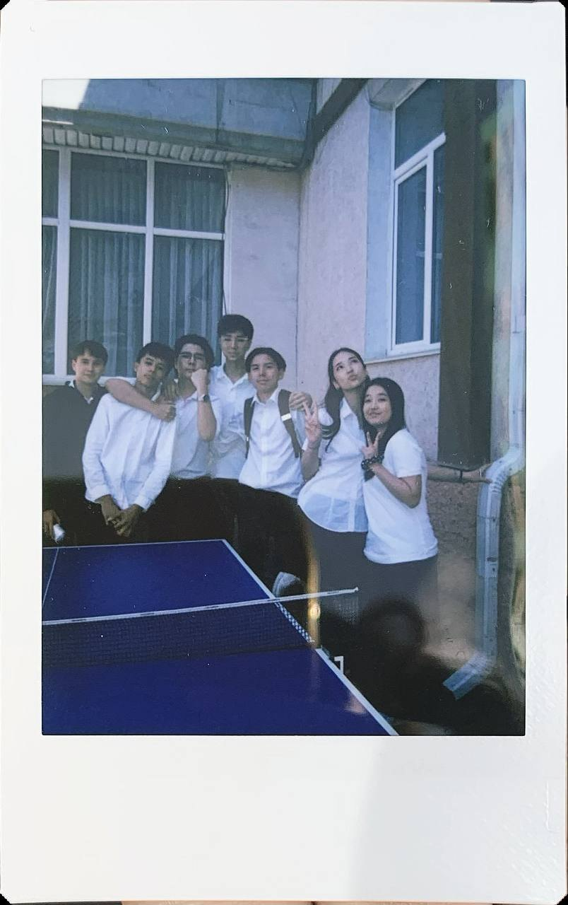
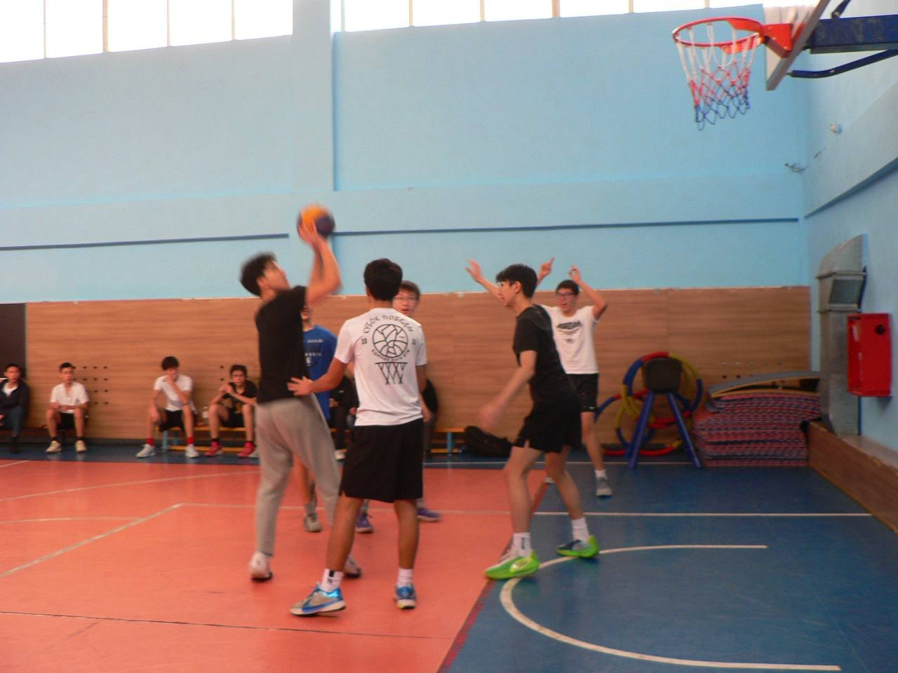
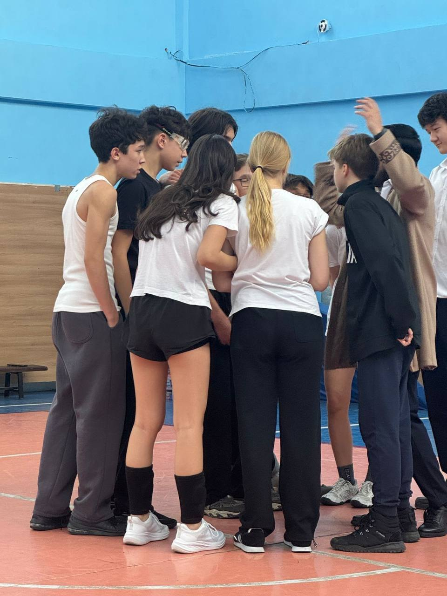

Организация классных школьных мероприятий, тематических дней, интерактивных перемен.
SL №165
@vote4binara
Candidate for President of SL №165
Vote for Binara
Твой голос — твой выбор. Меньше скучных обещаний, больше движа: сделаем нашу школу круче вместе!

Сымбаткызы Бинара
10 «В» класс


Обо мне
Кто я?
Меня зовут Бинара, и я ученица 10 «В» класса.
Лицей №165 стал для меня по-настоящему родным: за два года я успела активно погрузиться в школьную жизнь и стать частью ученического парламента, где создавала идеи для наших мероприятий.
Я очень ценю высокий статус нашей школы и искренне хочу не только сохранить его, но и сделать нашу лицейскую атмосферу ещё круче и дружнее!
Что я сделаю
Моя программа
Улучшение атмосферы в школе, чтобы для учеников было не только полезно ходить в школу, но и интересно.
Спорт и активность: поддержка школьных команд, турниры и активный образ жизни.
Школьная жизнь
Мы — одна команда









Честно и по делу
Почему именно я?
Я готова не просто говорить о проблемах, а брать и решать их.
Для меня важно, чтобы мнение каждого ученика — от младших до старших классов — было услышано.
Если я берусь за дело, то довожу его до конца и отвечаю за результат.


Твой голос — твой выбор. Сделаем нашу школу круче вместе!
Подписаться на @vote4binaraVote for Binara · SL №165